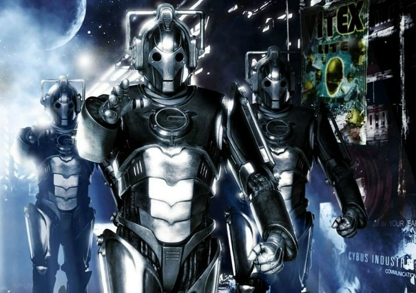

Эра Десятого Доктора (2 сезон)
<<< НАЗАД ||| 6. Век стали ||| ДАЛЬШЕ >>>
DVO PARUSSKI (2026), VO SAIGAN STUDIO+ или Original [ENG]
+ Русские субтитры:

MVO [TVShows] 2.0 + 5.1, [Кириллица], [Sci-Fi], [Baibako], [Канал СТС] - 2 версии или Original [ENG]
+ Original [ENG]
Субтитры: Русские {TrueTransLate}
Оригинальная версия | Все серии сезона в одном видео * без приквелов, мини-эпизодов и спецвыпусков |
The Age of Steel
Дата выхода: 20 мая 2006
Формат: 45-минутный эпизод
| Варианты озвучек: | * Разные: смотрите по инструкции |
|---|---|
| Скачивание и просмотр: |
Киберлюди взяли под контроль весь Лондон и начали преобразование населения. Доктор, Роза и Микки вынуждены спасаться бегством...


Трейлер: